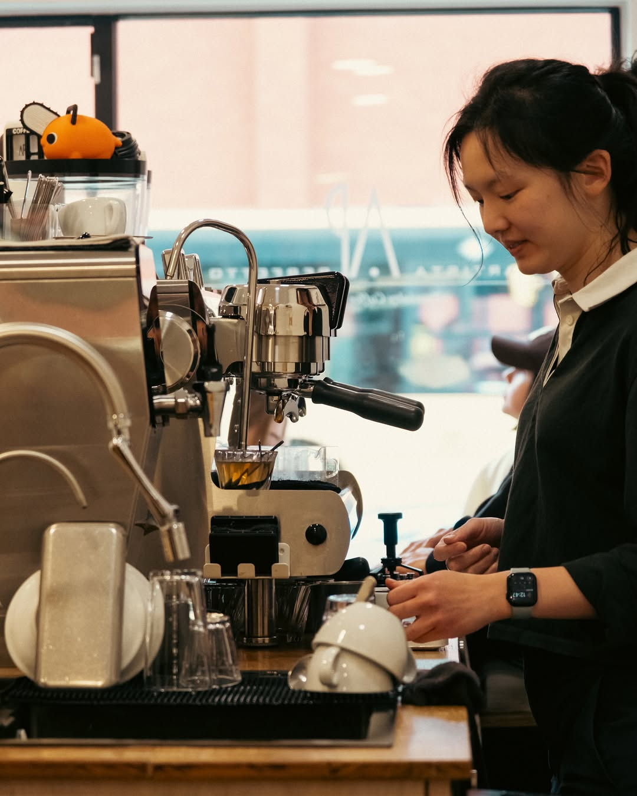
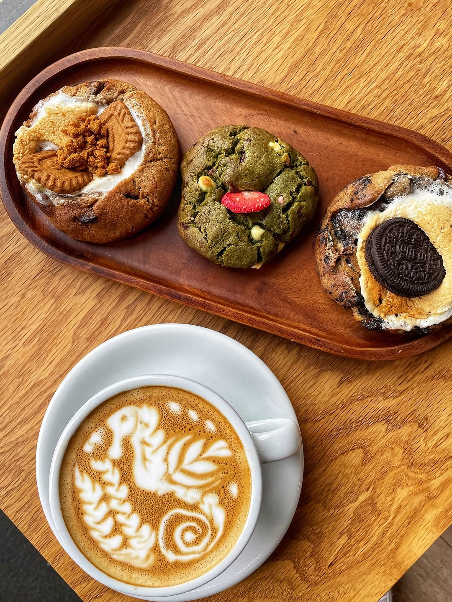

Unusual signatures
The Dirty and Iced Blackcinno give people something specific to remember.
130 OLDHAM ROAD · ANCOATS
A small Manchester coffee bar built around careful brewing, unusual signature drinks and small-batch bakes.

01 / THE APPROACH
Artista Perfetto brings techniques picked up across Japan and Hong Kong into a compact Ancoats shop — precise without becoming precious.
02 / SIGNATURES
The interesting bit is the method. Choose a drink to see why it is different.
JAPAN-INSPIRED · COLD · NO ICE
Cold milk sits beneath fresh espresso, so temperature and texture change as you drink.
03 / FROM ANCOATS
Real photography from Artista Perfetto's Manchester location. The final demo loads these files directly from this repository so third-party blocking cannot break the gallery.


04 / TAIWAN → HONG KONG → MANCHESTER
Manchester's Finest describes Artista Perfetto as the work of husband-and-wife team Noddy and Cyrus: precision-led coffee on one side, small-batch cookies on the other.
Save it as assets/video/story.mp4. Until then, the original feature stays available below.
Best clip: the team, barista process, or preparation of The Dirty / Iced Blackcinno. Use real brand footage only.
05 / WHY PEOPLE COME BACK
Across public coverage and reviews, the same themes keep appearing.
The Dirty and Iced Blackcinno give people something specific to remember.
The brewing is considered, but the room stays calm and approachable.
Small-batch cookies are designed to sit alongside the coffee rather than steal the show.
06 / VISIT